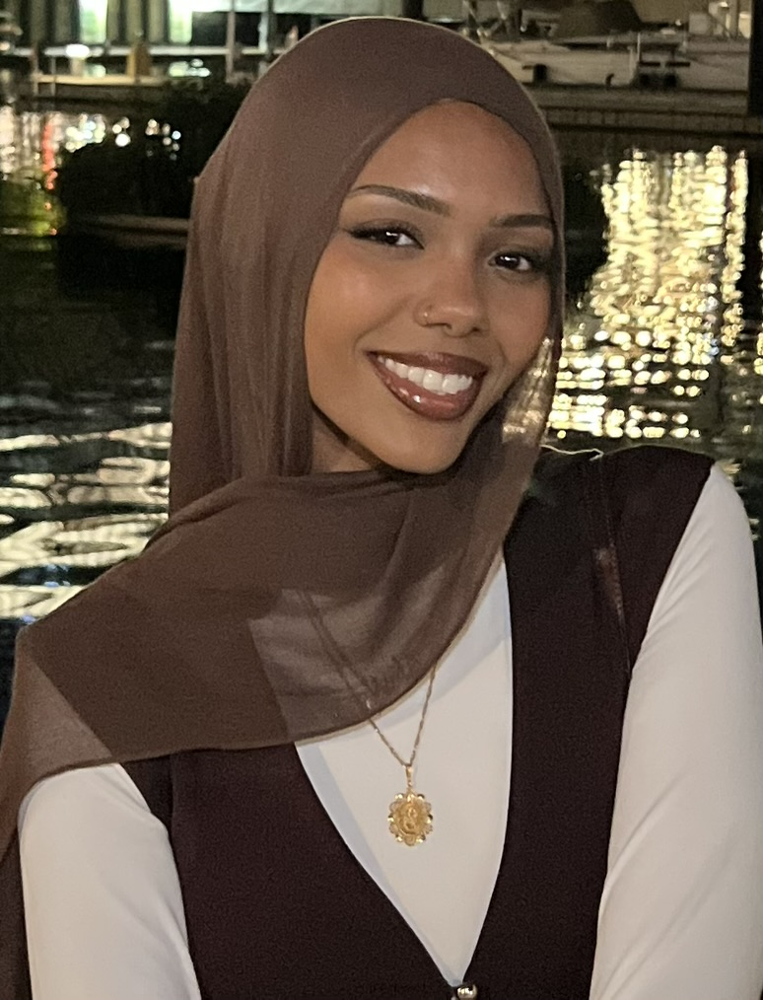
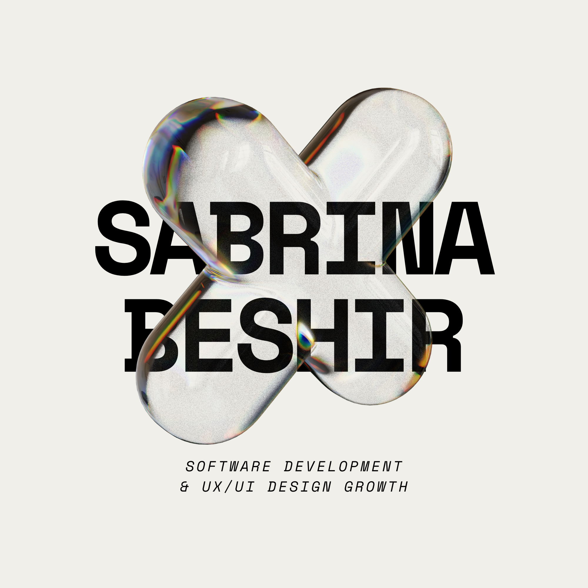

I created this site as part of a web design assignment, but I chose alternative R&B as the subject because it's a genre I genuinely love. I wanted a project that felt personal instead of generic, so I picked an artist and sound that I actually listen to.
Building this site pushed me to think about how design choices like fonts, color, and layout can reflect the mood of a topic. Alternative R&B has such a distinct, moody atmosphere, and I wanted the site itself to feel like it fit that vibe.
This project also gave me a chance to practice real front-end skills: structuring multi-page sites, writing external stylesheets, and publishing a live site with Git and GitHub Pages, skills I plan to keep building on.